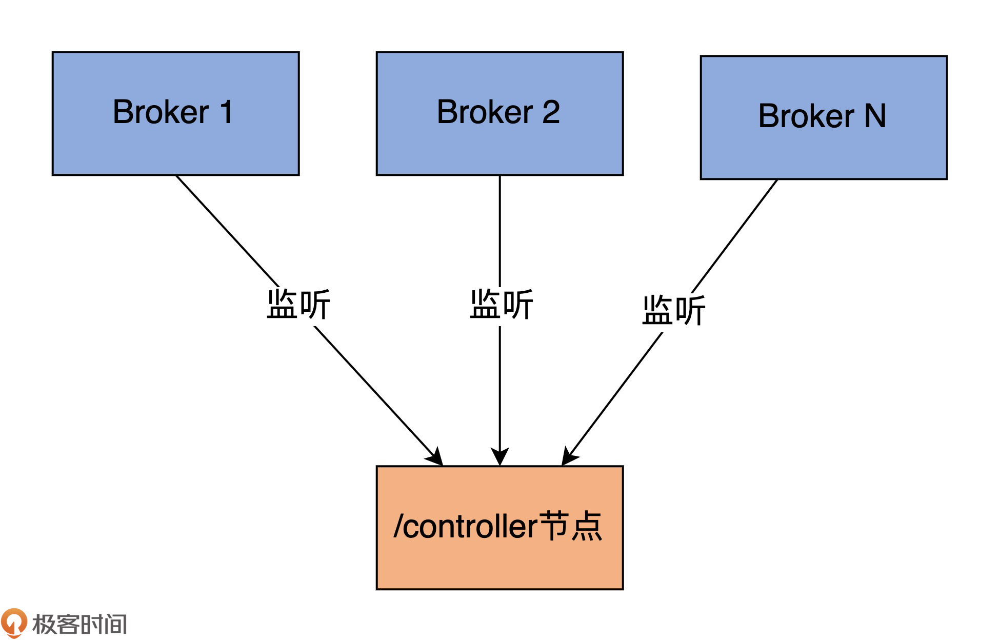
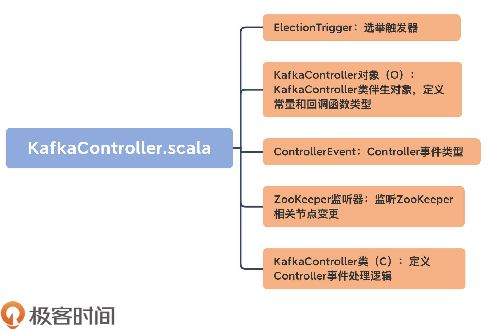
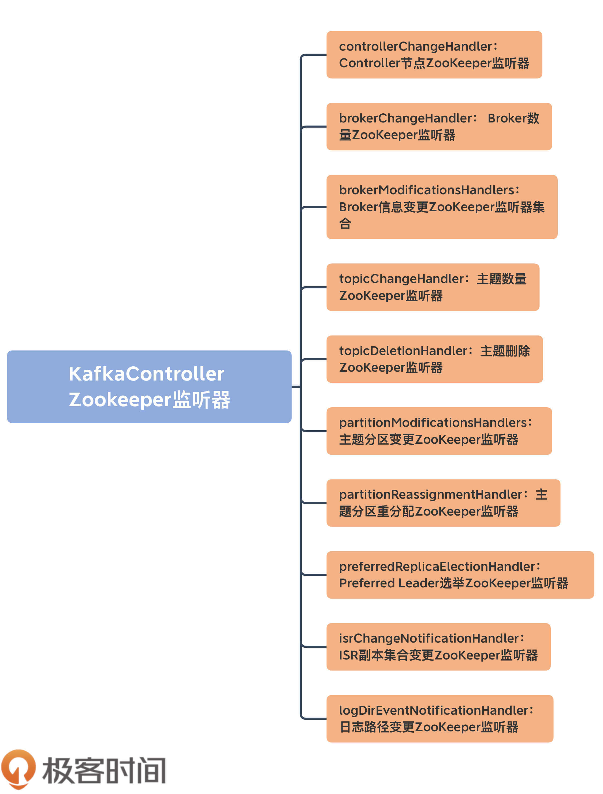
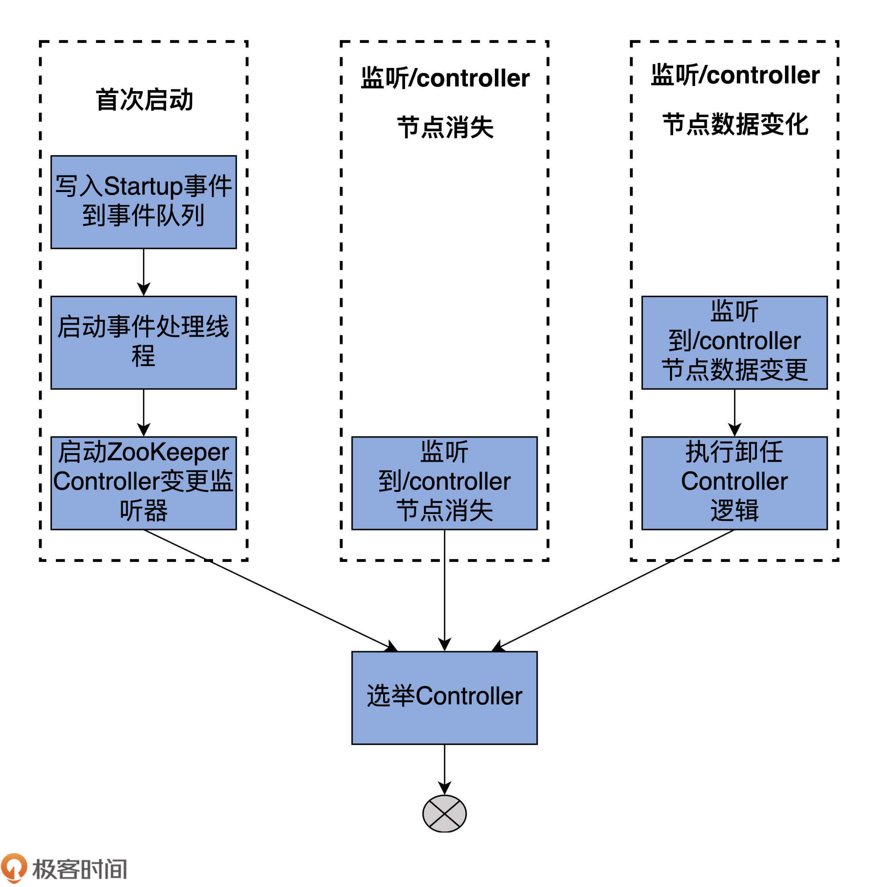
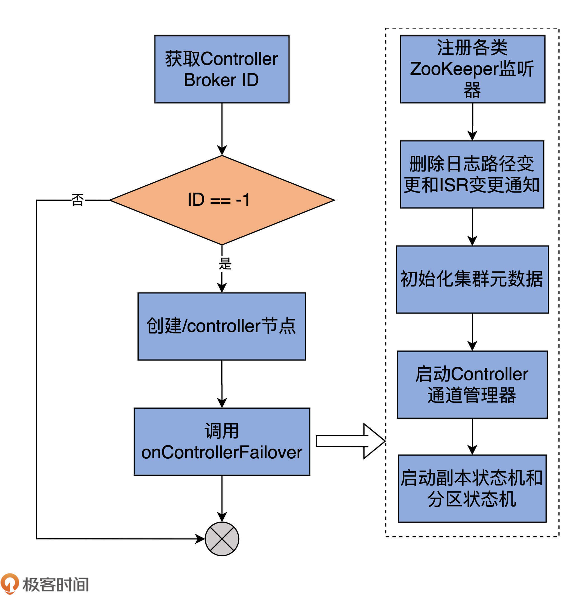
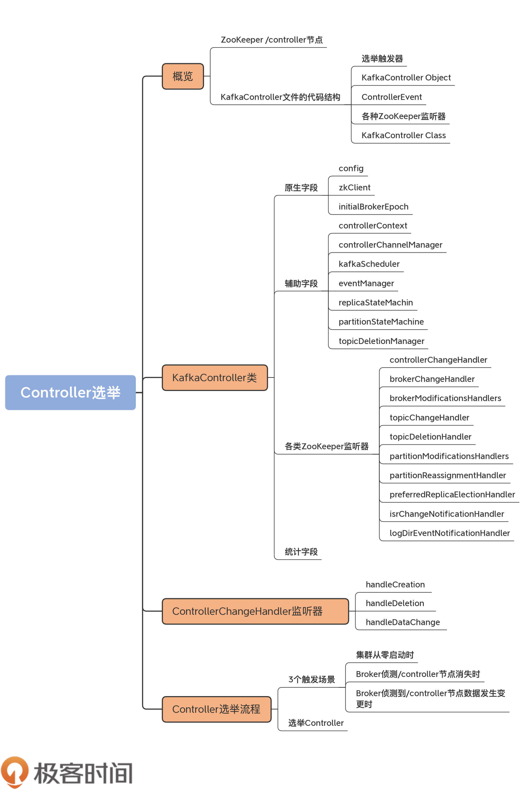

- 00 导读 构建Kafka工程和源码阅读环境、Scala语言热身.md.html
- 00 开篇词 阅读源码，逐渐成了职业进阶道路上的“必选项”.md.html
- 00 重磅加餐 带你快速入门Scala语言.md.html
- 01 日志段：保存消息文件的对象是怎么实现的？.md.html
- 02 日志（上）：日志究竟是如何加载日志段的？.md.html
- 03 日志（下）：彻底搞懂Log对象的常见操作.md.html
- 04 索引（上）：改进的二分查找算法在Kafka索引的应用.md.html
- 05 索引（下）：位移索引和时间戳索引的区别是什么？.md.html
- 06 请求通道：如何实现Kafka请求队列？.md.html
- 07 SocketServer（上）：Kafka到底是怎么应用NIO实现网络通信的？.md.html
- 08 SocketServer（中）：请求还要区分优先级？.md.html
- 09 SocketServer（下）：请求处理全流程源码分析.md.html
- 10 KafkaApis：Kafka最重要的源码入口，没有之一.md.html
- 11 Controller元数据：Controller都保存有哪些东西？有几种状态？.md.html
- 12 ControllerChannelManager：Controller如何管理请求发送？.md.html
- 13 ControllerEventManager：变身单线程后的Controller如何处理事件？.md.html
- 14 Controller选举是怎么实现的？.md.html
- 15 如何理解Controller在Kafka集群中的作用？.md.html
- 16 TopicDeletionManager： Topic是怎么被删除的？.md.html
- 17 ReplicaStateMachine：揭秘副本状态机实现原理.md.html
- 18 PartitionStateMachine：分区状态转换如何实现？.md.html
- 19 TimingWheel：探究Kafka定时器背后的高效时间轮算法.md.html
- 20 DelayedOperation：Broker是怎么延时处理请求的？.md.html
- 21 AbstractFetcherThread：拉取消息分几步？.md.html
- 22 ReplicaFetcherThread：Follower如何拉取Leader消息？.md.html
- 23 ReplicaManager（上）：必须要掌握的副本管理类定义和核心字段.md.html
- 24 ReplicaManager（中）：副本管理器是如何读写副本的？.md.html
- 25 ReplicaManager（下）：副本管理器是如何管理副本的？.md.html
- 26 MetadataCache：Broker是怎么异步更新元数据缓存的？.md.html
- 27 消费者组元数据（上）：消费者组都有哪些元数据？.md.html
- 28 消费者组元数据（下）：Kafka如何管理这些元数据？.md.html
- 29 GroupMetadataManager：组元数据管理器是个什么东西？.md.html
- 30 GroupMetadataManager：位移主题保存的只是位移吗？.md.html
- 31 GroupMetadataManager：查询位移时，不用读取位移主题？.md.html
- 32 GroupCoordinator：在Rebalance中，Coordinator如何处理成员入组？.md.html
- 33 GroupCoordinator：在Rebalance中，如何进行组同步？.md.html
- 特别放送（一）经典的Kafka学习资料有哪些？.md.html
- 特别放送（三）我是怎么度过日常一天的？.md.html
- 特别放送（二）一篇文章带你了解参与开源社区的全部流程.md.html
- 特别放送（五） Kafka 社区的重磅功能：移除 ZooKeeper 依赖.md.html
- 特别放送（四）20道经典的Kafka面试题详解.md.html
- 结束语 源码学习，我们才刚上路呢.md.html
- 捐赠
14 Controller选举是怎么实现的？
你好，我是胡夕。
上节课，我们学习了单线程事件队列模型处理Controller事件的代码。Controller组件通过ControllerEventManager类构造了一个阻塞队列，同时配以专属的事件处理线程，实现了对各类ControllerEvent的处理。
这种设计思路既保证了多线程访问所需的线程安全，还简化了Controller端的代码结构，极大地提升了代码的可维护性。
今天，我们学习下Controller选举部分的源码。
还记得我在[第11节课]的案例中提到的“恢复大法”——删除ZooKeeper的/controller节点吗？当时，我们靠着这个“秘籍”涉险过关，既恢复了错误的集群状态，又避免了重启整个生产环境。
但你有没有想过，为什么删除/controller节点能够令集群元数据重新保持同步呢？如果不了解这背后的原理，我们是不敢贸然在生产环境做这种操作的。今天，我们要学习的就是这背后的一整套实现逻辑，重点关注下Controller是怎么被选举出来的。
我始终认为，只有掌握了这些知识，才算真正入门Kafka服务器端的代码了。作为Broker端最重要的组件之一，Controller在Kafka中的地位无可替代。整个Kafka集群就只有一个Controller，从某种意义上来说，它是目前Kafka这个分布式系统中唯一的“单点”。
因此，了解这个“单点”的选举触发场景，以及如何被选举出来的，对于我们后面深入理解Controller在集群中的作用非常有帮助。毕竟，Controller对外提供的一些服务也是采用了类似的实现原理。
概览
ZooKeeper /controller节点
再次强调下，在一个Kafka集群中，某段时间内只能有一台Broker被选举为Controller。随着时间的推移，可能会有不同的Broker陆续担任过Controller的角色，但是在某一时刻，Controller只能由一个Broker担任。
那选择哪个Broker充当Controller呢？当前，Controller的选举过程依赖ZooKeeper完成。ZooKeeper除了扮演集群元数据的“真理之源”角色，还定义了/controller临时节点（Ephemeral Node），以协助完成Controller的选举。
下面这段代码展示的是一个双Broker的Kafka集群上的ZooKeeper中/controller节点：
{"version":1,"brokerid":0,"timestamp":"1585098432431"}
cZxid = 0x1a
ctime = Wed Mar 25 09:07:12 CST 2020
mZxid = 0x1a
mtime = Wed Mar 25 09:07:12 CST 2020
pZxid = 0x1a
cversion = 0
dataVersion = 0
aclVersion = 0
ephemeralOwner = 0x100002d3a1f0000
dataLength = 54
numChildren = 0
有两个地方的内容，你要重点关注一下。
- Controller Broker Id是0，表示序号为0的Broker是集群Controller。
- ephemeralOwner字段不是0x0，说明这是一个临时节点。
既然是临时节点，那么，一旦Broker与ZooKeeper的会话终止，该节点就会消失。Controller选举就依靠了这个特性。每个Broker都会监听/controller节点随时准备应聘Controller角色。下图展示了Broker与/controller节点的交互关系：

如图所示，集群上所有的Broker都在实时监听ZooKeeper上的这个节点。这里的“监听”有两个含义。
- 监听这个节点是否存在。倘若发现这个节点不存在，Broker会立即“抢注”该节点，即创建/controller节点。创建成功的那个Broker，即当选为新一届的Controller。
- 监听这个节点数据是否发生了变更。同样，一旦发现该节点的内容发生了变化，Broker也会立即启动新一轮的Controller选举。
掌握了这些基础之后，下面我们来阅读具体的源码文件：KafkaController.scala。这是一个2200行的大文件。我先向你介绍一下这个文件的大致结构，以免你陷入到一些繁枝末节中。
源码结构
KafkaController文件的代码结构如下图所示：

整体而言，该文件大致由五部分组成。
- 选举触发器（ElectionTrigger）：这里的选举不是指Controller选举，而是指主题分区副本的选举，即为哪些分区选择Leader副本。后面在学习副本管理器和分区管理器时，我们会讲到它。
- KafkaController Object：KafkaController伴生对象，仅仅定义了一些常量和回调函数类型。
- ControllerEvent：定义Controller事件类型。上节课我们详细学习过Controller事件以及基于事件的单线程事件队列模型。这部分的代码看着很多，但实际上都是千篇一律的。你看懂了一个事件的定义，其他的也就不在话下了。
- 各种ZooKeeper监听器：定义ZooKeeper监听器，去监听ZooKeeper中各个节点的变更。今天，我们重点关注监听/controller节点的那个监听器。
- KafkaController Class：定义KafkaController类以及实际的处理逻辑。这是我们今天的重点学习对象。
接下来，我会给你重点介绍KafkaController类、ZooKeeper监听器和Controller选举这三大部分。在众多的ZooKeeper监听器中，我会详细介绍监听Controller变更的监听器，它也是我们了解Controller选举流程的核心环节。
KafkaController类
这个类大约有1900行代码，里面定义了非常多的变量和方法。这些方法大多是处理不同Controller事件的。后面讲到选举流程的时候，我会挑一些有代表性的来介绍。我希望你能举一反三，借此吃透其他方法的代码。毕竟，它们做的事情大同小异，至少代码风格非常相似。
在学习重要的方法之前，我们必须要先掌握KafkaController类的定义。接下来，我们从4个维度来进行学习，分别是原生字段、辅助字段、各类ZooKeeper监听器字段和统计字段。
弄明白了这些字段的含义之后，再去看操作这些字段的方法，会更加有的放矢，理解起来也会更加容易。
原生字段
首先来看原生字段。所谓的原生字段，是指在创建一个KafkaController实例时，需要指定的字段。
先来看下KafkaController类的定义代码：
// 字段含义：
// config：Kafka配置信息，通过它，你能拿到Broker端所有参数的值
// zkClient：ZooKeeper客户端，Controller与ZooKeeper的所有交互均通过该属性完成
// time：提供时间服务(如获取当前时间)的工具类
// metrics：实现指标监控服务(如创建监控指标)的工具类
// initialBrokerInfo：Broker节点信息，包括主机名、端口号，所用监听器等
// initialBrokerEpoch：Broker Epoch值，用于隔离老Controller发送的请求
// tokenManager：实现Delegation token管理的工具类。Delegation token是一种轻量级的认证机制
// threadNamePrefix：Controller端事件处理线程名字前缀
class KafkaController(val config: KafkaConfig,
zkClient: KafkaZkClient,
time: Time,
metrics: Metrics,
initialBrokerInfo: BrokerInfo,
initialBrokerEpoch: Long,
tokenManager: DelegationTokenManager,
threadNamePrefix: Option[String] = None)
extends ControllerEventProcessor with Logging with KafkaMetricsGroup {
......
}
就像我上节课说过的，KafkaController实现了ControllerEventProcessor接口，因而也就实现了处理Controller事件的process方法。这里面比较重要的字段有3个。
- config：KafkaConfig类实例，里面封装了Broker端所有参数的值。
- zkClient：ZooKeeper客户端类，定义了与ZooKeeper交互的所有方法。
- initialBrokerEpoch：Controller所在Broker的Epoch值。Kafka使用它来确保Broker不会处理老Controller发来的请求。
其他字段要么是像time、metrics一样，是工具类字段，要么是像initialBrokerInfo、tokenManager字段一样，使用场景很有限，我就不展开讲了。
辅助字段
除了原生字段之外，KafkaController还定义了很多辅助字段，帮助实现Controller的各类功能。
我们来看一些重要的辅助字段：
......
// 集群元数据类，保存集群所有元数据
val controllerContext = new ControllerContext
// Controller端通道管理器类，负责Controller向Broker发送请求
var controllerChannelManager = new ControllerChannelManager(controllerContext, config, time, metrics,
stateChangeLogger, threadNamePrefix)
// 线程调度器，当前唯一负责定期执行Leader重选举
private[controller] val kafkaScheduler = new KafkaScheduler(1)
// Controller事件管理器，负责管理事件处理线程
private[controller] val eventManager = new ControllerEventManager(config.brokerId, this, time,
controllerContext.stats.rateAndTimeMetrics)
......
// 副本状态机，负责副本状态转换
val replicaStateMachine: ReplicaStateMachine = new ZkReplicaStateMachine(config, stateChangeLogger, controllerContext, zkClient,
new ControllerBrokerRequestBatch(config, controllerChannelManager, eventManager, controllerContext, stateChangeLogger))
// 分区状态机，负责分区状态转换
val partitionStateMachine: PartitionStateMachine = new ZkPartitionStateMachine(config, stateChangeLogger, controllerContext, zkClient,
new ControllerBrokerRequestBatch(config, controllerChannelManager, eventManager, controllerContext, stateChangeLogger))
// 主题删除管理器，负责删除主题及日志
val topicDeletionManager = new TopicDeletionManager(config, controllerContext, replicaStateMachine,
partitionStateMachine, new ControllerDeletionClient(this, zkClient))
......
其中，有7个字段是重中之重。
- controllerContext：集群元数据类，保存集群所有元数据。
- controllerChannelManager：Controller端通道管理器类，负责Controller向Broker发送请求。
- kafkaScheduler：线程调度器，当前唯一负责定期执行分区重平衡Leader选举。
- eventManager：Controller事件管理器，负责管理事件处理线程。
- replicaStateMachine：副本状态机，负责副本状态转换。
- partitionStateMachine：分区状态机，负责分区状态转换。
- topicDeletionManager：主题删除管理器，负责删除主题及日志。
各类ZooKeeper监听器
我们今天开头学到的ControllerChangeHandler仅仅是其中的一种。实际上，该类定义了很多监听器，如下所示：
// Controller节点ZooKeeper监听器
private val controllerChangeHandler = new ControllerChangeHandler(eventManager)
// Broker数量ZooKeeper监听器
private val brokerChangeHandler = new BrokerChangeHandler(eventManager)
// Broker信息变更ZooKeeper监听器集合
private val brokerModificationsHandlers: mutable.Map[Int, BrokerModificationsHandler] = mutable.Map.empty
// 主题数量ZooKeeper监听器
private val topicChangeHandler = new TopicChangeHandler(eventManager)
// 主题删除ZooKeeper监听器
private val topicDeletionHandler = new TopicDeletionHandler(eventManager)
// 主题分区变更ZooKeeper监听器
private val partitionModificationsHandlers: mutable.Map[String, PartitionModificationsHandler] = mutable.Map.empty
// 主题分区重分配ZooKeeper监听器
private val partitionReassignmentHandler = new PartitionReassignmentHandler(eventManager)
// Preferred Leader选举ZooKeeper监听器
private val preferredReplicaElectionHandler = new PreferredReplicaElectionHandler(eventManager)
// ISR副本集合变更ZooKeeper监听器
private val isrChangeNotificationHandler = new IsrChangeNotificationHandler(eventManager)
// 日志路径变更ZooKeeper监听器
private val logDirEventNotificationHandler = new LogDirEventNotificationHandler(eventManager)
我分别解释一下这些ZooKeeper监听器的作用：
- controllerChangeHandler：前面说过，它是监听/controller节点变更的。这种变更包括节点创建、删除以及数据变更。
- brokerChangeHandler：监听Broker的数量变化。
- brokerModificationsHandlers：监听Broker的数据变更，比如Broker的配置信息发生的变化。
- topicChangeHandler：监控主题数量变更。
- topicDeletionHandler：监听主题删除节点/admin/delete_topics的子节点数量变更。
- partitionModificationsHandlers：监控主题分区数据变更的监听器，比如，新增加了副本、分区更换了Leader副本。
- partitionReassignmentHandler：监听分区副本重分配任务。一旦发现新提交的任务，就为目标分区执行副本重分配。
- preferredReplicaElectionHandler：监听Preferred Leader选举任务。一旦发现新提交的任务，就为目标主题执行Preferred Leader选举。
- isrChangeNotificationHandler：监听ISR副本集合变更。一旦被触发，就需要获取ISR发生变更的分区列表，然后更新Controller端对应的Leader和ISR缓存元数据。
- logDirEventNotificationHandler：监听日志路径变更。一旦被触发，需要获取受影响的Broker列表，然后处理这些Broker上失效的日志路径。
我画了一张脑图，希望可以帮助你更高效地记住这些ZooKeeper监听器：

统计字段
最后，我们来看统计字段。
这些统计字段大多用于计算统计指标。有的监控指标甚至是非常重要的Controller监控项，比如ActiveControllerCount指标。下面，我们来了解下KafkaController都定义了哪些统计字段。这些指标的含义一目了然，非常清晰，我用注释的方式给出每个字段的含义：
// 当前Controller所在Broker Id
@volatile private var activeControllerId = -1
// 离线分区总数
@volatile private var offlinePartitionCount = 0
// 满足Preferred Leader选举条件的总分区数
@volatile private var preferredReplicaImbalanceCount = 0
// 总主题数
@volatile private var globalTopicCount = 0
// 总主题分区数
@volatile private var globalPartitionCount = 0
// 待删除主题数
@volatile private var topicsToDeleteCount = 0
//待删除副本数
@volatile private var replicasToDeleteCount = 0
// 暂时无法删除的主题数
@volatile private var ineligibleTopicsToDeleteCount = 0
// 暂时无法删除的副本数
@volatile private var ineligibleReplicasToDeleteCount = 0
好了，KafkaController类的定义我们就全部介绍完了。再次强调下，因为KafkaController类的代码很多，我强烈建议你熟练掌握这些字段的含义，因为后面的所有方法都是围绕着这些字段进行操作的。
接下来，我以Controller的选举流程为例，引出KafkaController的一些方法的实现原理。不过，在此之前，我们要学习监听Controller变更的ZooKeeper监听器：ControllerChangeHandler的源码。
ControllerChangeHandler监听器
就像我前面说到的，KafkaController定义了十几种ZooKeeper监听器。和Controller相关的监听器是ControllerChangeHandler，用于监听Controller的变更，定义代码如下：
class ControllerChangeHandler(eventManager: ControllerEventManager) extends ZNodeChangeHandler {
// ZooKeeper中Controller节点路径，即/controller
override val path: String = ControllerZNode.path
// 监听/controller节点创建事件
override def handleCreation(): Unit = eventManager.put(ControllerChange)
// 监听/controller节点被删除事件
override def handleDeletion(): Unit = eventManager.put(Reelect)
// 监听/controller节点数据变更事件
override def handleDataChange(): Unit = eventManager.put(ControllerChange)
}
该监听器接收ControllerEventManager实例，实现了ZNodeChangeHandler接口的三个方法：handleCreation、handleDeletion和handleDataChange。该监听器下的path变量，实际上就是/controller字符串，表示它监听ZooKeeper的这个节点。
3个handle方法都用于监听/controller节点的变更，但实现细节上稍有不同。
handleCreation和handleDataChange的处理方式是向事件队列写入ControllerChange事件；handleDeletion的处理方式是向事件队列写入Reelect事件。
Deletion表明ZooKeeper中/controller节点不存在了，即Kafka集群中的Controller暂时空缺了。因为它和Creation和DataChange是不同的状态，需要区别对待，因此，Reelect事件做的事情要比ControllerChange的多：处理ControllerChange事件，只需要当前Broker执行“卸任Controller”的逻辑即可，而Reelect事件是重选举，除了Broker执行卸任逻辑之外，还要求Broker参与到重选举中来。
由于KafkaController的process方法代码非常长，因此，我节选了刚刚提到的那两个事件的处理代码：
// process方法(部分)
override def process(event: ControllerEvent): Unit = {
try {
event match {
......
// ControllerChange事件
case ControllerChange =>
processControllerChange()
// Reelect事件
case Reelect =>
processReelect()
......
}
}
......
}
// 如果是ControllerChange事件，仅执行卸任逻辑即可
private def processControllerChange(): Unit = {
maybeResign()
}
// 如果是Reelect事件，还需要执行elect方法参与新一轮的选举
private def processReelect(): Unit = {
maybeResign()
elect()
}
可以看到，虽然代码非常长，但整体结构却工整清晰，全部都是基于模式匹配的事件处理。process方法会根据给定的Controller事件类型，调用对应的process***方法处理该事件。这里只列举了ZooKeeper端/controller节点监听器监听的两类事件，以及对应的处理方法。
对于ControllerChange事件而言，处理方式是调用maybeResign去执行Controller的卸任逻辑。如果是Reelect事件，除了执行卸任逻辑之外，还要额外执行elect方法进行新一轮的Controller选举。
Controller选举流程
说完了ControllerChangeHandler源码，我们来看下Controller的选举。所谓的Controller选举，是指Kafka选择集群中一台Broker行使Controller职责。整个选举过程分为两个步骤：触发选举和开始选举。
触发选举
我先用一张图展示下可能触发Controller选举的三个场景。

这三个场景是：
- 集群从零启动时；
- Broker侦测/controller节点消失时；
- Broker侦测到/controller节点数据发生变更时。
这三个场景殊途同归，最后都要执行选举Controller的动作。我来一一解释下这三个场景，然后再介绍选举Controller的具体操作。
场景一：集群从零启动
集群首次启动时，Controller尚未被选举出来。于是，Broker启动后，首先将Startup这个ControllerEvent写入到事件队列中，然后启动对应的事件处理线程和ControllerChangeHandler ZooKeeper监听器，最后依赖事件处理线程进行Controller的选举。
在源码中，KafkaController类的startup方法就是做这些事情的。当Broker启动时，它会调用这个方法启动ControllerEventThread线程。值得注意的是，每个Broker都需要做这些事情，不是说只有Controller所在的Broker才需要执行这些逻辑。
startup方法的主体代码如下：
def startup() = {
// 第1步：注册ZooKeeper状态变更监听器，它是用于监听Zookeeper会话过期的
zkClient.registerStateChangeHandler(new StateChangeHandler {
override val name: String = StateChangeHandlers.ControllerHandler
override def afterInitializingSession(): Unit = {
eventManager.put(RegisterBrokerAndReelect)
}
override def beforeInitializingSession(): Unit = {
val queuedEvent = eventManager.clearAndPut(Expire)
queuedEvent.awaitProcessing()
}
})
// 第2步：写入Startup事件到事件队列
eventManager.put(Startup)
// 第3步：启动ControllerEventThread线程，开始处理事件队列中的ControllerEvent
eventManager.start()
}
首先，startup方法会注册ZooKeeper状态变更监听器，用于监听Broker与ZooKeeper之间的会话是否过期。接着，写入Startup事件到事件队列，然后启动ControllerEventThread线程，开始处理事件队列中的Startup事件。
接下来，我们来学习下KafkaController的process方法处理Startup事件的方法：
// KafkaController的process方法，
override def process(event: ControllerEvent): Unit = {
try {
event match {
......
case Startup =>
processStartup() // 处理Startup事件
}
}
......
}
private def processStartup(): Unit = {
// 注册ControllerChangeHandler ZooKeeper监听器
zkClient.registerZNodeChangeHandlerAndCheckExistence(
controllerChangeHandler)
// 执行Controller选举
elect()
}
从这段代码可知，process方法调用processStartup方法去处理Startup事件。而processStartup方法又会调用zkClient的registerZNodeChangeHandlerAndCheckExistence方法注册ControllerChangeHandler监听器。
值得注意的是，虽然前面的三个场景是并列的关系，但实际上，后面的两个场景必须要等场景一的这一步成功执行之后，才能被触发。
这三种场景都要选举Controller，因此，我们最后统一学习elect方法的代码实现。
总体来说，集群启动时，Broker通过向事件队列“塞入”Startup事件的方式，来触发Controller的竞选。
场景二：/controller节点消失
Broker检测到/controller节点消失时，就意味着，此时整个集群中没有Controller。因此，所有检测到/controller节点消失的Broker，都会立即调用elect方法执行竞选逻辑。
你可能会问：“Broker是怎么侦测到ZooKeeper上的这一变化的呢？”实际上，这是ZooKeeper监听器提供的功能，换句话说，这是Apache ZooKeeper自己实现的功能，所以我们才说，Kafka依赖ZooKeeper完成Controller的选举。
讲到这里，我说点题外话，社区最近正在酝酿彻底移除ZooKeeper依赖。具体到Controller端的变化，就是在Kafka内部实现一个类似于Raft的共识算法来选举Controller。我会在后面的特别放送里详细讲一下社区移除ZooKeeper的全盘计划。
场景三：/controller节点数据变更
Broker检测到/controller节点数据发生变化，通常表明，Controller“易主”了，这就分为两种情况：
- 如果Broker之前是Controller，那么该Broker需要首先执行卸任操作，然后再尝试竞选；
- 如果Broker之前不是Controller，那么，该Broker直接去竞选新Controller。
具体到代码层面，maybeResign方法形象地说明了这两种情况。你要注意方法中的maybe字样，这表明，Broker可能需要执行卸任操作，也可能不需要。Kafka源码非常喜欢用maybe***来命名方法名，以表示那些在特定条件下才需要执行的逻辑。以下是maybeResign的实现：
private def maybeResign(): Unit = {
// 非常关键的一步！这是判断是否需要执行卸任逻辑的重要依据！
// 判断该Broker之前是否是Controller
val wasActiveBeforeChange = isActive
// 注册ControllerChangeHandler监听器
zkClient.registerZNodeChangeHandlerAndCheckExistence(
controllerChangeHandler)
// 获取当前集群Controller所在的Broker Id，如果没有Controller则返回-1
activeControllerId = zkClient.getControllerId.getOrElse(-1)
// 如果该Broker之前是Controller但现在不是了
if (wasActiveBeforeChange && !isActive) {
onControllerResignation() // 执行卸任逻辑
}
}
代码的第一行非常关键，它是决定是否需要执行卸任的重要依据。毕竟，如果Broker之前不是Controller，那何来“卸任”一说呢？之后代码要注册ControllerChangeHandler监听器，获取当前集群Controller所在的Broker ID，如果没有Controller，则返回-1。有了这些数据之后，maybeResign方法需要判断该Broker是否之前是Controller但现在不是了。如果是这种情况的话，则调用onControllerResignation方法执行Controller卸任逻辑。
说到“卸任”，你可能会问：“卸任逻辑是由哪个方法执行的呢？”实际上，这是由onControllerResignation方法执行的，它主要是用于清空各种数据结构的值、取消ZooKeeper监听器、关闭各种状态机以及管理器，等等。我用注释的方式给出它的逻辑实现：
private def onControllerResignation(): Unit = {
debug("Resigning")
// 取消ZooKeeper监听器的注册
zkClient.unregisterZNodeChildChangeHandler(
isrChangeNotificationHandler.path)
zkClient.unregisterZNodeChangeHandler(
partitionReassignmentHandler.path)
zkClient.unregisterZNodeChangeHandler(
preferredReplicaElectionHandler.path)
zkClient.unregisterZNodeChildChangeHandler(
logDirEventNotificationHandler.path)
unregisterBrokerModificationsHandler(
brokerModificationsHandlers.keySet)
// 关闭Kafka线程调度器，其实就是取消定期的Leader重选举
kafkaScheduler.shutdown()
// 将统计字段全部清0
offlinePartitionCount = 0
preferredReplicaImbalanceCount = 0
globalTopicCount = 0
globalPartitionCount = 0
topicsToDeleteCount = 0
replicasToDeleteCount = 0
ineligibleTopicsToDeleteCount = 0
ineligibleReplicasToDeleteCount = 0
// 关闭Token过期检查调度器
if (tokenCleanScheduler.isStarted)
tokenCleanScheduler.shutdown()
// 取消分区重分配监听器的注册
unregisterPartitionReassignmentIsrChangeHandlers()
// 关闭分区状态机
partitionStateMachine.shutdown()
// 取消主题变更监听器的注册
zkClient.unregisterZNodeChildChangeHandler(topicChangeHandler.path)
// 取消分区变更监听器的注册
unregisterPartitionModificationsHandlers(
partitionModificationsHandlers.keys.toSeq)
// 取消主题删除监听器的注册
zkClient.unregisterZNodeChildChangeHandler(
topicDeletionHandler.path)
// 关闭副本状态机
replicaStateMachine.shutdown()
// 取消Broker变更监听器的注册
zkClient.unregisterZNodeChildChangeHandler(brokerChangeHandler.path)
// 关闭Controller通道管理器
controllerChannelManager.shutdown()
// 清空集群元数据
controllerContext.resetContext()
info("Resigned")
}
选举Controller
讲完了触发场景，接下来，我们就要学习Controller选举的源码了。前面说过了，这三种选举场景最后都会调用elect方法来执行选举逻辑。我们来看下它的实现：
private def elect(): Unit = {
// 第1步：获取当前Controller所在Broker的序号，如果Controller不存在，显式标记为-1
activeControllerId = zkClient.getControllerId.getOrElse(-1)
// 第2步：如果当前Controller已经选出来了，直接返回即可
if (activeControllerId != -1) {
debug(s"Broker $activeControllerId has been elected as the controller, so stopping the election process.")
return
}
try {
// 第3步：注册Controller相关信息
// 主要是创建/controller节点
val (epoch, epochZkVersion) = zkClient.registerControllerAndIncrementControllerEpoch(config.brokerId)
controllerContext.epoch = epoch
controllerContext.epochZkVersion = epochZkVersion
activeControllerId = config.brokerId
info(s"${config.brokerId} successfully elected as the controller. Epoch incremented to ${controllerContext.epoch} " +
s"and epoch zk version is now ${controllerContext.epochZkVersion}")
// 第4步：执行当选Controller的后续逻辑
onControllerFailover()
} catch {
case e: ControllerMovedException =>
maybeResign()
if (activeControllerId != -1)
debug(s"Broker $activeControllerId was elected as controller instead of broker ${config.brokerId}", e)
else
warn("A controller has been elected but just resigned, this will result in another round of election", e)
case t: Throwable =>
error(s"Error while electing or becoming controller on broker ${config.brokerId}. " +
s"Trigger controller movement immediately", t)
triggerControllerMove()
}
}
为了帮助你更好地理解这个方法，我再画一张图来进行说明：

该方法首先检查Controller是否已经选出来了。要知道，集群中的所有Broker都要执行这些逻辑，因此，非常有可能出现某些Broker在执行elect方法时，Controller已经被选出来的情况。如果Controller已经选出来了，那么，自然也就不用再做什么了。相反地，如果Controller尚未被选举出来，那么，代码会尝试创建/controller节点去抢注Controller。
一旦抢注成功，就调用onControllerFailover方法，执行选举成功后的动作。这些动作包括注册各类ZooKeeper监听器、删除日志路径变更和ISR副本变更通知事件、启动Controller通道管理器，以及启动副本状态机和分区状态机。
如果抢注失败了，代码会抛出ControllerMovedException异常。这通常表明Controller已经被其他Broker抢先占据了，那么，此时代码调用maybeResign方法去执行卸任逻辑。
总结
今天，我们梳理了Controller选举的全过程，包括Controller如何借助ZooKeeper监听器实现监听Controller节点，以及Controller的选举触发场景和完整流程。我们来回顾一下这节课的重点。
- Controller依赖ZooKeeper实现Controller选举，主要是借助于/controller临时节点和ZooKeeper的监听器机制。
- Controller触发场景有3种：集群启动时；/controller节点被删除时；/controller节点数据变更时。
- 源码最终调用elect方法实现Controller选举。

下节课，我将带你学习Controller的其他重要功能，包括它如何管理Broker和副本等。你千万不要错过。
课后讨论
在这节课刚开始的时候，我提到，删除/controller会触发Controller选举，之后会同步集群元数据信息。那么，你知道源码是在哪里更新的元数据请求吗？
欢迎你在留言区畅所欲言，跟我交流讨论，也欢迎你把今天的内容分享给你的朋友。
© 2019 - 2023 Liangliang Lee. Powered by gin and hexo-theme-book.